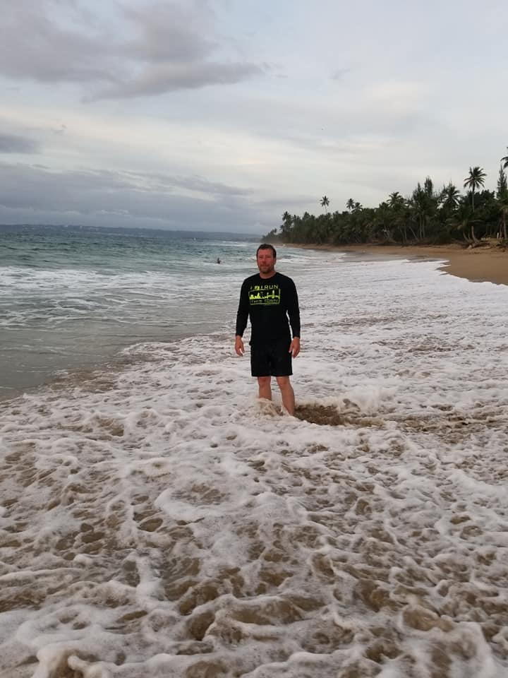

About Me
Im from Rome, Ga and moved to the Nashville area a few months ago. I currently work for a welding and medical supply company. I'm taking this class here at Vanderbilt because coding has always interested me. All the work that goes into developing a web site and to see the final outcome is rewarding.
My hobbies are kayaking and hiking. I like to play video games on the ps4 console. Also, I'm into reading and collecting comic books. Im more into the Marvel universe and my favorite heroes are Spider-Man and Wolverine. When I lived in Florida I would surf on my long baord.
I am the oldest of four siblings and have four nephews and three nieces. I have 3 dogs. Their names are Milli, Merle, and Moose.